|


|
|
| Service News | ||
|
|
Various models
All types Diesel with DPF (MiTo - 147 - 147 Ducati Corse - 159 - GT - Brera/Spider) |
|
|||
| 1080 B 810 AA |
PARTICULATE FILTER DPF
Information for the network |
|||

|
Supersedes the following SN: - 10.08.07 dated 16-11-2007 CD 06/2007; |
TYPES OF PARTICULATE FILTERS
The particulate filter inserted in the exhaust system and integrated with the catalytic converter consists of a monolithic porous silicone carbide based support. It allows to reduce the amount of emitted particulate to less than one thousandth including the smallest sized particles (<20nm). It is a mechanical filter provided with a series of channels in which the particulate is trapped while the exhaust gases cross the porous walls (Fig. 1).
Fig. 1
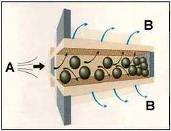
A Input exhaust gases
B Output filtered exhaust gases
Because these filters are mechanical traps, they need to be regularly cleaned out. The cleaning procedure is called "regeneration". During the regeneration process, the particulate contained inside the filter is burnt thus clear the pores in which the powder is collected.
This process is run in average every 800/1000 km, but may be needed more frequently (less than 400 km) if the vehicle is used in particularly demanding conditions: the distance travelled between one regeneration and the next depends on the operating conditions and the use of the vehicle/engine.
There are essentially two types of particular filter systems used by engineers:
FAP or DPF
These two types of filtering system have different names and different features and operation. The greatest difference essentially concerns the regeneration strategy of the ceramic filters.
FAP
FAP is the brand name of the particulate filters fitting in cars made by Peugeot-Citroen-PSA.
This type of filter was the first to be installed on standard production cars (the 2.2 HDI Peugeot 607 engine). Use was later extended to 2.0 HDI and gradually installed on an increasing number of cars, including those of the FIAT-PSA joint venture (Ulysse-Phedra).
From a technical point of view, FAP belongs to the type of filters which require the use of additives (cerium oxides, iron oxide, etc.). Eolys is the brand name of an additive.
These were the first filters to be installed on cars and therefore are also the one which are best known, in terms of problems, servicing methods and repair procedures.
FAP is the brand name of the particulate filters fitting in cars made by Peugeot-Citroen-PSA.
This type of filter was the first to be installed on standard production cars (the 2.2 HDI Peugeot 607 engine). Use was later extended to 2.0 HDI and gradually installed on an increasing number of cars, including those of the FIAT-PSA joint venture (Ulysse-Phedra).
From a technical point of view, FAP belongs to the type of filters which require the use of additives (cerium oxides, iron oxide, etc.). Eolys is the brand name of an additive.
The FAP filters were the first filters to be installed on cars and therefore are also the one which are best known, in terms of problems, servicing methods and repair procedures.
FAP filters thus require an additive for active regeneration.
As previously mentioned, the filter regeneration process consists of burning the particulate collected by the trap.
The particulate is burnt at a temperature of approximately 600-650°C. In order to reach such temperatures, modern diesel engines carry out post-injections after TDC which burn on the oxidising catalyser arranged in front of the filter. The purpose is to increase the temperature of the exhaust gases.
Additive is appropriately added to the fuel to lower the regeneration threshold by reducing the particulate combustion temperature to approximately 450°C. The gas temperature reaches 450°C with the post-injections to that the particulate inside the filter is burnt and the filter is regenerated.
Fig. 2 – System diagram with FAP filter
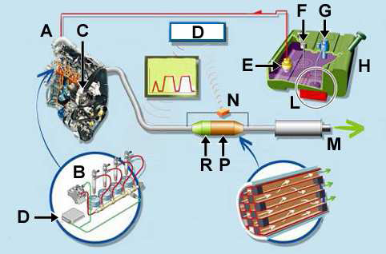
A. Engine
B. Common rail
C. High pressure pump
D. Engine ECU
E. Fuel pump
F. Level indicator
G. Injector and adjuster
H. Fuel tank
L. Additive
M. Muffler
N. Sensor
P. Particulate filter
R. Pre-catalyst
DPF
This particulate filter does not use additives because the exhaust gas temperature is increased to 600-650°C. The temperature is increased by means of a series of post-injections and post-combustions (partially in the exhaust manifold and in the oxidising catalysers). The resulting temperatures are widely sufficient to fully burn the particulate collected in the filter. Noble metals which act as catalysers are inserted in the walls of the filter to facilitate the collected particulate combustion process.
The system without additive has the advantage of not requiring additive top-ups. The additive is rather expensive, in addition to being dangerous for human health. On the other hand, the filter without additive requires higher regeneration triggering temperatures. Furthermore, the filter without additive causes a certain contamination (dilution) of the engine oil due to the increased post-injection. The engine oil may therefore be degraded more rapidly than normal because it is diluted by fuel according to the number of regenerations and thus the adopted driving style. The DPF generation method is based on the common rail multiple injection system (MultiJet).
Fig. 3A - Cold combustion check flexibility
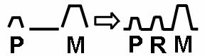
|
Cold combustion check flexibility |
Less noise |
Lower compression ratio |
- Better performance. - Nox/PM reduction |
Fig. 3B - Very rapid pilot injection
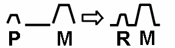
|
Very rapid pilot injection flexibility |
Less particulate |
More recirculation gas (EGR) |
Nox/PM reduction |
Fig. 3C - AFTER injection
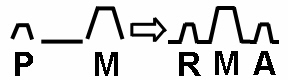
|
AFTER injection |
Oxidation of particulate |
More recirculation gas |
Nox/PM reduction |
Fig. 3D - AFTER injection + POST for post-treatment
|
AFTER injection + POST for post-treatment |
Lower exhaust gas temperature and hydrocarbon injection (HC) |
Higher post-treatment system inlet temperature |
Filter regeneration |
P = Pilot injection
M = Main injection
R = Pre-injection
A = Next injection
PS = Post-injection
Fig. 4 - Particulate filter inlet temperature (°C)
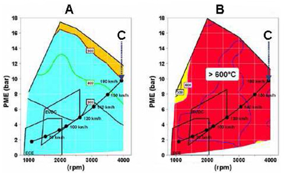
A. Base
B. With regeneration strategies
C. Vehicle operating curve
MAIN DIFFERENCES BETWEEN FAP AND DPF APPLICATIONS
The main difference between FAP and DPF depends on the use of additive or not which as mentioned is used to lower the regeneration temperature to approximately 450°C. The difference regeneration strategy causes a partial diversification of the filter itself:
- the FAP has a mechanical filtering structure for burning the particulate by means of the additive;
- in the DPF, the filtering structure is coated by noble metals (as classical catalysers) which increase the temperature and promote the regeneration process.
For these reasons, these two filter types have advantages and disadvantages:
|
FAP |
DPF |
|
|
Advantages |
Low regeneration temperature Low back pressure |
Simple system No additives |
|
Disadvantages |
Complex system Short life |
High regeneration temperature Oil dilution |
The two types of filter described above are both used on FGA vehicles.
|
FAP |
PSA vehicles |
Ulysse and Phedra |
|
DPF |
FIAT vehicles |
The other FIAT, LANCIA and ALFA ROMEO vehicles |
DPF SYSTEM CONSTRUCTION
The DPF (Diesel Particulate Filter) consists of the following parts:
DPF Euro 4
- Double oxidising catalyser + DPF
- 2 exhaust gas temperature sensors
- 1 differential pressure sensor
- Engine ECU with specific strategies
- DPF warning light + message on instrument panel .
Fig. 5 - DPF Euro 4 system diagram
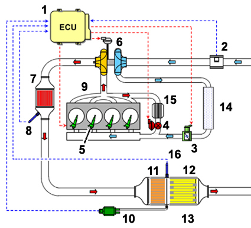
Key
1. Engine ECU
2. Air flow meter
3. Motorized throttle
4. EGR
5. Injections
6. Turbine
7. Pre-catalyser
8. Exhaust gas temperature sensor (pre-cat)
9. Engine
10. Exhaust gas differential pressure sensor
11. Central catalyser
12. Exhaust gas temperature sensor (DPF)
13. DPF filter
14. Intercooler
15. EGR heat exchanger
16. Exhaust gas temperature sensor (DPF)
DPF Euro 5
- One oxidising catalyser + DPF
- 1 exhaust gas temperature sensor
- 1 differential pressure sensor (with two measuring points)
- 1 Lambda sensor
- Engine ECU with specific strategies
- DPF warning light + message on instrument panel.
Fig. 6 - DPF Euro 5 system diagram
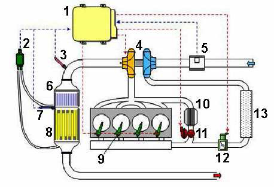
1. Engine ECU
2. Exhaust gas differential pressure sensor
3. Lambda sensor
4. VGT turbine
5. Air flow meter
6. Front catalyser
7. Exhaust gas temperature sensor (DPF)
8. DPF filter
9. Injectors
10. EGR heat exchanger
11. EGR
12. Motorized throttle
13. Intercooler
DPF (Diesel Particulate Filter)
Introduction
The system consists of two main components:
- Oxidising catalyser
- Particulate filter
The filter is generally located under the body (Euro 4 versions), but in the future (Euro 5) the units will be fitted in the engine compartment instead of the pre-cat which will be eliminated.
|
|
It will not always be possible to move the unit into the engine compartment: it will depend on engine version and the available space in the engine compartment. |
Fig. 7 – DPF filter
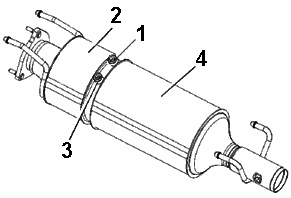
1. Pressure vent upstream of the DPF
2. Oxidising catalyser
3. DPF temperature sensor housing
4. Particulate filter (DPF)
Materials used and geometric configurations
The materials with which the filter is made and its geometric configuration are key elements in the DPF system. Various factors must be carefully evaluated: exhaust back pressure, particulate withholding property, regeneration ease, duration of performance in time, and finally costs.
Silica carbide is the material normally used for making DPF filters. This material ensures:
- high filtering efficiency;
- low load loss;
- good resistance to heat, mechanical and chemical stress;
- good storage capacity of the particulate to limit regeneration frequency.
Silica carbide features:
- Melting point: 1723° C
- Working temperature: 900° C
- Thermal expansion coefficient: 5·10-6/°C
|
|
The average temperature of the DPF during regeneration is 700-800°C. The DPF could be damaged by thermal shock at temperatures higher than 1000°C. Breakage by vibrations may be caused in incorrect assembly of the filter in the container. |
The structure of the DPF (Fig. 8) consists of alternatively blocked channels for obtaining a filtering surface of several square metres. The object of the filter is to force the motion of exhaust gases through the porous holes of the filtering element thus allowing the mechanical removal of the particles of particulate matter (PM).
Fig. 8
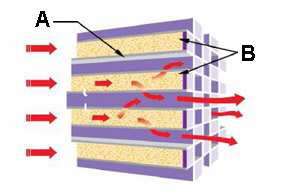
A. Filtering wall
B. Particulate matter (PM)
The particulate which is collected in the DPF (Fig. 9) and when a predetermined threshold stored in the system during design and calibration is reached, the engine ECU starts a regeneration procedure to burn the PM.
Fig. 9
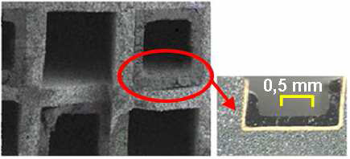
Fig. 10 – DPF filter example
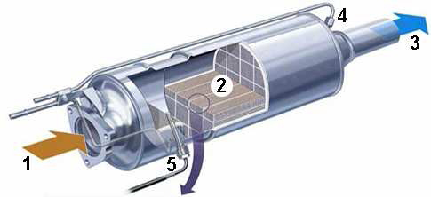
1. Exhaust gas inlet
2. DPF filter
3. Filtered exhaust gas outlet
4. Differential pressure sensor measuring point (downstream of the filter)
5. Exhaust gas temperature sensor

|
Remember that the particulate filter must never be washed using water jets or other devices. In case of excessive obstruction which cannot be solved by means of a forced regeneration procedure, the filter must be replaced. |
After reach regeneration process an amount of unburnt solid residues (ashes) will remain. This determines the lifespan of a DPF filter. The normal lifespan of a DPF is 250,000 km, but this distance may be reduced according to driving style, engine oil consumption and number of regeneration.
Central catalyser and DPF location
Figure 11 shows the location of the central catalyser and the particulate filter. The unit is normally fitted under the middle part under the body in Euro 4 systems.
Fig. 11
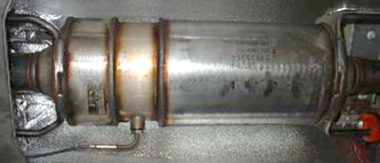
DPF setup
|
|
Figure 12 shows the arrangement with single tube differential pressure sensor. |
Fig. 12
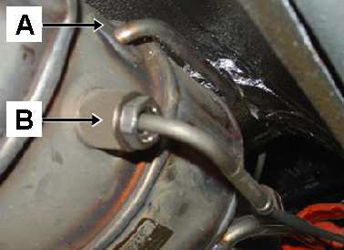
A. Pressure measuring tube upstream of DPF.
B. Exhaust gas temperature upstream of DPF.
EXHAUST GAS TEMPERATURE SENSOR
The temperature sensor (Fig. 13) of the PTC type is used to send the exhaust gas temperature value to the engine ECU (CCM) to manage the following operating strategies:
- Exhaust gas temperature > 600 °C at DPF inlet
- Ensure complete PM combustion
- Safety limits.
Fig. 13
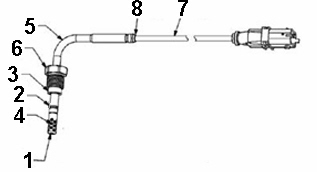
1. End protection
2. Protective pipe
3. Flange
4. Thermocouple
5. Rigid cable
6. Securing ring nut
7. Flexible cable
8. Teflon pipe
Exhaust gas temperature sensor pinout
Fig. 14 – K188 (DPF temperature sensor)
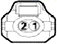
|
Sensor |
CCM |
|
|
Mass |
1 |
35 – A |
|
Signal |
2 |
34 - A |
Fig. 15 – K189 (Pre-cat temperature sensor)

|
Sensor |
CCM |
|
|
Mass |
1 |
33 – A |
|
Signal |
2 |
32 - A |
Location of exhaust gas temperature sensor electric connectors
There are two exhaust gas temperature sensors (Fig. 16) arranged as follows:
- one at pre-cat outlet (A - Euro 4 only)
- one straddling the central filter and the DPF filter (B - for Euro 4 and Euro 5 systems)
The temperature sensor electric connectors are arranged in the position shown in Fig. 16.
Fig. 16
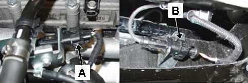
A. K189 Pre-cat temperature sensor connector (engine compartment)
B. K188 DPF temperature sensor connector (underbody)
DIFFERENTIAL PRESSURE SENSOR
Figure 17 shows a single tube pressure sensor.
Fig. 17
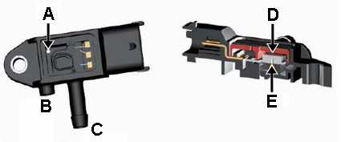
A. Additional hole for atmospheric pressure
B. Atmospheric pressure
C. Exhaust gas pressure inlet
D. Atmospheric pressure
E. Exhaust gas pressure measured upstream of DPF.
The sensor, appropriately calibrated, provides a voltage proportional to the differential pressure measured by the sensor:
Differential pressure = pressure upstream of DPF - atmospheric pressure
This signal is used by the engine ECU (CCM) to check the DPF obstruction level and to actuate regeneration strategies.
Differential pressure sensor location
The differential pressure sensor (Fig. 18) is generally arranged on the engine compartment wall in the central area next to the coolant expansion vessel.
Fig. 18
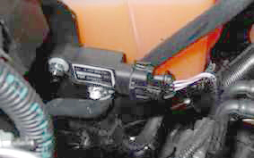
Differential pressure sensor pinout
Fig. 19 – K187 (differential pressure sensor)
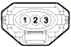
|
Sensor |
CCM |
|
|
Power (+5 Volt) |
1 |
44 - A |
|
Ground (GND) |
2 |
37 - A |
|
Signal (0 - 4.65 Volt) |
3 |
36 - A |
Differential pressure sensor electric signal.
The following chart (Fig. 20) shows the pattern of the electric signal generated by the pressure sensor; the table in Fig. 21 shows the transcoding of the pressure value and the electric signal (mbar/volt).
Fig. 20
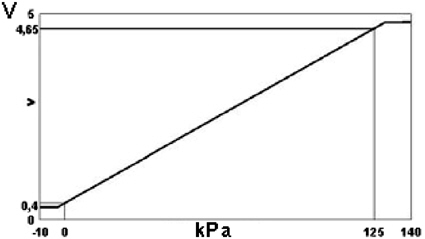
A possible back pressure value is shown in the following chart (Fig. 21) according to the amount of particulate matter collected in the DPF:
Fig. 21
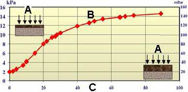
A. Flow
B. Back pressure
C. PM weight, g
ENGINE ECU (CCM)
In versions with DPF, the engine ECU implemented specific functions for controlling the accumulation of particulate and for DPF filter regeneration strategies.
Fig. 22 – Engine ECU
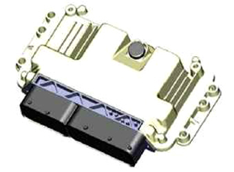
ENGINE ECU STRATEGIES
DPF filter regeneration
The particulate accumulate in the DPF is burnt by means of the regeneration process.
When the regeneration process is started, the engine ECU will implement the following strategies:
- PILOT, PRE, MAIN injection times;
- Injection pressure;
- EGR closes;
- Throttle opens;
- Turbo pressure;
- AFTER injection activation increases the exhaust gas temperature to T1 (450°C) with combustion in the combustion chamber.
- POST injection activation increase the exhaust gas temperature to T2 (600°C) with combustion inside the exhaust pipe (pre-cat and catalyser).
Conditions:
- Regeneration time approximately 12 min.
Fig. 23 - Injection process
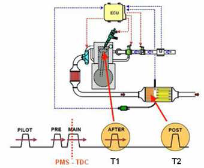
Engine oil dilution
Pilot, Pre, Main, After are activate with piston in top position (A Fig. 27), while post injection occurs when the position is in bottom position (B Fig. 27): this causes atomisation of fuel on the cylinder walls causing increase of fuel leakage into the oil sump.
Fig. 24
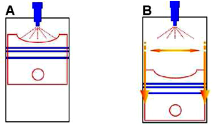
In order to prevent risks for the engine, the engine ECU calculates engine oil degrading and lights up the engine oil warning light when the safety threshold is reached (Fig. 28).
Fig. 25 – Engine oil warning light
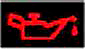
The oil replacement frequency therefore differs from that show on the service schedule and becomes flexible (15000 km - 50000 km).
The driver is informed of the need to change the oil and given a 1000 km notice.
|
|
The parameters must be reset with Examiner after changing the engine oil. |
DRIVING PROFILES
The zones related to the driving profiles stored in the engine ECU are shown in the following chart (Fig. 29). The engine ECU to determine the driving profile is based on:
- Vehicle speed,
- Engine rpm,
- Accelerator pedal,
- Coolant temperature,
- Air temperature,
- Fuel amount
- Exhaust gas temperature
Fig. 26 – Driving profiles
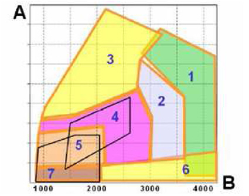
A. Torque
B. Engine rpm
Possible driving profiles defined in Euro 4 applications (Fig. 26):
1 - Fast Highway
2 - Slow Highway
3 - Fast Acceleration / Uphill
4 - Extra Urban Driving
5 - Urban Driving
6 - Downhill
7 - Slow Urban Driving
Other profiles are stored in the ECU and not shown, namely:
- Warm up
- Cold start
Determining the filter blockage level
The filter regeneration levels (burnt PM amount) depend on the engine operating condition (driving profile).
The engine ECU (CCM) to determine the PM accumulation level in the filter is based on the following parameters:
- Odometer
- Driving profiles (a sportier driving style generates more frequent regeneration frequency).
- Differential pressure sensor (see note).
|
|
The engine ECU uses the signal from the differential pressure sensor for the following strategies: |
A - Euro 4 models
- This is used to check the coherence of the particulate filter obstruction parameter calculation. The engine ECU warning light (MIL) will light up if a discrepancy of the calculation made by the ECU and that made by the differential pressure.
B - Euro 5 models
- This is used to check the coherence of the particulate filter obstruction parameter calculation. The engine ECU warning light (MIL) will light up if a discrepancy of the calculation made by the ECU and that made by the differential pressure.
- Regeneration is operated if the differential pressure exceeds certain values.
A maximum of 6 regenerations are attempted. After this, if the result is negative, the engine ECU lights up the MIL warning light(s) (the system advises to go to the nearest service centre to have a service regeneration procedure run due to excessive DPF obstruction).
The following chart (Fig. 27) shows the size DPF filter operating areas.
Fig. 27
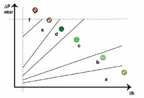
DP. Differential pressure
l/h. Exhaust gas flow rate
a. Perforated filter
b. Regenerated filter
c. Intermediate zone
d. Partially obstructed filter
e. Obstructed filter
f. Fully obstructed filter
Normal operating zone: "b, c, d"
In the passage from the intermediate zone (c) to zone (d) occurs more or less rapidly according to the driving profile and the engine ECU runs a controlled regeneration procedure to bring the the differential pressure values back into zone (b) or zone (c), according to the driving profile.
Critical operating zone: "e"
Excessive filter obstruction may occur in case of lack of coherence between estimated particulate collection model in CCM and the actual particulate production and the pressure difference at the filter ends may vary more rapidly. The engine ECU will detect the overload conditions and the engine warning light (MIL) will light up on the instrument panel.
In these conditions, the engine ECU requires Service regeneration for bringing the differential pressure values back to zone (b) or zone (c).
|
|
A limited fuel flow strategy is activated to protect the engine. The vehicle performance will be reduced as a consequence. |
Abnormal operating zones: "a" and "f"
Zones "a" and "f" represent the conditions in which the differential pressure is anomalous. Fully obstructed filter zone "f": the differential pressure is constantly higher than a threshold which varies according to the exhaust gas flow rate. In this condition, the engine ECU indicates filter overload by lighting up the instrument panel warning light (MIL).
In these conditions, the engine ECU requests Service regeneration attempt to bring the differential pressure values back to zone "b" or zone "c". The DPF must be replaced if the regeneration attempt fails.
|
|
A major fuel flow limitation strategy is activated to protect the engine. The vehicle performance will be reduced as a consequence. |
Perforated filter zone (a): the differential pressure is lower than a given threshold which depends on flow rate. In this condition, the engine ECU indicates perforated filter state by lighting up the diagnostic warning light (E5 applications only).
DPF FILTER REGENERATION TYPES
The DPF is a mechanical filter in which particulate is trapped. Periodical cleaning - called regeneration (RGN) - is required. The regeneration process consists in burning the particulate matter collected inside the filter and clear the pore.
This process is carried out in average every 800/1000 km (the distance travelled between one regeneration and the next depends on the vehicle use and the driving profile (example: sporty, urban, highway, etc.).
There are three types of DPF regeneration:
- spontaneous
- controlled
- Service.
Spontaneous regeneration
The particulate matter collected in the filter burns spontaneously. No intervention by the engine ECU is required in this case.
Driving conditions directly effect exhaust gas temperature and consequently the temperature inside the filter.
The intervention thresholds are:
- exhaust gas temperature: 280°C < T > 500°C;
- NO2/PM ratio: much higher than 10.
|
|
The thresholds for spontaneously activating are difficult to reach during normal driving profiles. |
Controlled regeneration
Controlled regeneration is automatically managed by the engine ECU when travelling on the road by means of controls for increasing the exhaust gas temperature to reach the particulate matter combustion threshold.
During the regeneration process, the engine ECU:
- interrupts exhaust gas recirculation (EGR);
- operates the turbine in order to maintain the engine torque constant;
- activates post injections (which heat up the exhaust gases directly);
The effects of controlled regeneration
During regeneration, the engine ECU corrects some operating strategies:
- Engine torque
At constant engine rpm and load, post injection increases an engine torque increase. In order to maintain the same driving conditions and avoid engine torque variations, the engine ECU:
- reduces fuel flow during main injection,
- adjusts supercharging pressure.
- Supercharger pressure adjustment
To maintain the engine torque unchanged during regeneration, the engine ECU reduces supercharger pressure to improve handling.
This is because the exhaust gases during regeneration are hotter and tend to increase turbine rotation.
- Exhaust gas recirculation adjustment (EGR)
At each regeneration, the engine ECU may actuate two EGR solenoid valve strategies:
- EGR closed: in the case, several post-injections are maintained in order to keep the exhaust gas temperature high.
- EGR slightly open: in this case, the recycled gases make the air/fuel mixture richer; as a consequence, the exhaust gases are hotter than there are fewer post injections.
- Motorized throttle
During particulate filter regeneration, in case of cut-off, the post injection only is maintained to keep the exhaust gases at approximately 600°C in the oxidising catalyser. In these conditions, the engine ECU reduces the motorised throttle opening to decrease the fresh air flow taken in by the engine. This strategy prevents excessive exhaust gas cooling to prevent compromising the DPF regeneration process.
Service regeneration
Service regeneration is managed by the ECU and only activated by a diagnostic operator using the diagnostic tool (EXAMINER).
Regeneration must be carried out after the engine ECU lights up (MIL) and in presence of error code P1206.
|
|
The engine must be warm to activate Service regeneration. |
|
|
If the claimed fault is present, check the parameters in Table 1 Examiner parameters shown in the Diagnostic section before running a Service regeneration. |
|
|
Take note if the data determined by Examiner before the Service because the data must be submitted to TE.SE.O or other departments if the fault is not solved. |
|
|
Drive a complete cycle to regenerate the filter completely after the regeneration procedure. |
|
|
For DPF system diagnostics |
DIAGNOSTICS (EDC16 C39 - F4)
Parameters
The following items (specific for DPF versions) are listed in the parameter environment:
- Differential sensor pressure
- Particulate filter obstruction
- Pre-cat temperature
- Particulate filter temperature
- Particulate filter state
- Average distance of last five regenerations
- Average time of last five regenerations
- Average temperature of last five regenerations
- Odometer last regeneration (km)
- Odometer last DPF replacement (km)
Differential sensor pressure
This indicates the back pressure value upstream of the particulate filter.
Particulate filter obstruction
This indicates the value expressed in percentage (%) of the estimated particulate matter by the CCM
|
|
The Particulate filter obstruction parameter is calculated by the CCM on statistic basis and only meaningful when error P1206 is not present. |
Pre-cat temperature
This indicates the exhaust gas temperature measured by the sensor located at the pre-cat outlet.
Particulate filter temperature
this indicates the exhaust gas temperature measured by the sensor located at the particulate filter inlet.
Particulate filter state
This indicates the level of obstruction of the particulate filter in all conditions by the CCM.
Average distance of last five regenerations
This indicates the distance travelled between one DPF regeneration and the other.
|
|
The engine ECU calculates the weighed average of the sum of the last five distances (km) travelled between one regeneration and the next (the weight of the last RGN is 70%). |
Average time of last five regenerations
This indicates the average time required for the last five particulate filter regenerations.
Average temperature of last five regenerations
This indicates the average temperature of the last five particulate filter regenerations.
Odometer last regeneration (km)
This parameter indicates the distance travelled since the last regeneration (force and/or spontaneous). The value is set to 0 at the end of the successful regeneration (spontaneous and/or automatic using instrument) or when the particulate filter is replaced. If the engine ECU is replaced, the parameter must be updated with the same odometer reading in the CCM.
Odometer last DPF replacement (km)
This indicates the kilometres driven since the last particulate filter replacement. This parameter is set to 0 km by the particulate filter replacement procedure. If the engine ECU is replaced, the parameter must be updated with the same odometer reading in the CCM.
Configurations / Procedures:
The following items (specific for DPF versions) are listed in the configuration environment:
- Engine oil change
- Particulate filter replacement
- Particulate filter regeneration
Engine oil change (DPF versions only)
The engine oil change frequency is no longer determined by the service schedule of the car but is not based on the number of DPF regeneration cycles. Regeneration causes a higher increase of dilution of fuel in the oil sump. The engine ECU calculates engine oil degrading and informs the driver when the oil needs to be changed.
Particulate filter (DPF) replacement
Reset the DPF parameters with the Examiner procedure.
Particulate filter (DPF) regeneration
The particulate filter regeneration must must run in the following cases:
- Engine warning light (MIL) on and present of P1206 - Level 1 in the engine ECU memory. This informs the driver that the system is requiring Service generation, carried out a diagnostic operator at a service centre, because the DPF is obstructed. In these conditions, the engine ECU actuates a recovery procedure and slightly limits the engine performance.
- Engine warning light (MIL) on and present of P2002 - Level 2 in the engine ECU memory. This informs the driver that the system is requiring Service generation, carried out a diagnostic operator at a service centre, because the DPF is excessively obstructed and probably needs to be replaced. In these conditions, the engine ECU actuates a recovery procedure and slightly limits the engine performance.
|
|
Error P1206 may be caused by failure or incorrect operation of some engineering parameters. Read the following chapter carefully: CAUSES & TROUBLESHOOTING below |
MAIN FAULTS
As previously mentioned, the engine produces particulate matter which is trapped in the filter during normal use. The collection of particulate matter increases the pressure at turbocharger outlet and decreases vehicle performance.
This fault is indicated by the ECU by means of an error code, which indicates non-coherence between pressure read by the differential pressure sensor and the particulate % calculated by the CCM
Most typical faults:
- Engine warning light fault P1206
- Poor engine efficiency
During Service regeneration, it is advisable to apply a series of loads (lights, windscreen wiper, A/C system, etc.) to increase the possibility of success.
There could be two causes if the Service regeneration is not successful:
- excessively obstructed filter (in this case, the DPF must be replaced)
- injection system problems (see injector paragraph below).
CAUSES & TROUBLESHOOTING
The particulate filter obstruction parameter is a statistic calculation run by the engine ECU. If the engine ECU finds an errors in this calculation, DPF system faults are caused: the MIL is lit up and error P1206 is generated.
|
|
The differential pressure sensor and its signal helps the engine ECU to verify calculated value plausibility. |
In case of normal use, there may be various causes of incorrect system operation:
1 - Incorrect thermostat operation
2 - Incorrect flow meter reading
3 - Incorrect injection operation
4 - Presence of oil in intake circuit
5 - Turbo compressor problems
6 - EGR value problems
7 - Condensation
8 - Oil leakage from valve guides
Thermostat
Incorrect operation of the thermostat (including excessive opening and closing tolerances) causes a high production of smokiness (causes a different calibration of the reference threshold in the engine ECU: approximately 88° C): this causes incorrect calculation (rounded down of the amount of PM collected in the DPF.
This amount of particulate in excess not calculated by the ECU causes incoherence between the percentage calculated by CCM and the back pressure in exhaust. This causes the engine warning light (MIL) to light up.
Solution:
this problem is diagnosed by running a test drive (with engine warm) at a speed from 70 to 90 km/h in 4/5 gear. With EXAMINER on-board, check that the engine coolant temperature is always: > 85℃
If the temperature is lower than 85° C, replace the thermostat and check that with the new component, the engine coolant temperature is higher than the reference value.
|
|
The tolerance of the mechanical thermostat generate lower engine operation temperature, causing an incorrect EGR management, causing more generation of PM than that estimated by the engine ECU. |
|
|
For EURO 5, the threshold is 70° C. |
Air flow meter
Incorrect operation of the air flow meter (including excessive reading tolerances) causes high smoke production.
In this case, the high production of smoke is caused by a greater opening of the EGR with consequent exhaust gas recirculation inside the engine.
Solution:
Diagnosing this fault is not simple. This is because flow meter problems may occur also with incorrect air flow readings when engine is idling.
The solution in this case is to replace the air flow meter.
|
|
The air mass measured with the engine idling for at least 2 minutes (to close the EGR) and ensure intake air temperature measured by air flow meter lower than 35 °C: - for 1.9 and 2.4 JTD engines, 480 mg/iniet. - for 1.3 JTD engines, from 280 to 310 mg/iniet. |
Injectors
The incorrect FBC value (Fuel Borne Catalyst or injection time correction factor) is analysed by means of EXAMINER checking that the FBC of the single injector is comprised between -2 and +2 mm3/injet with the engine idling and warm.
The incorrect FBC value generates the following problems:
- high particulate production
- regeneration cannot be run.
Solution:
This problems may be solved in principle as follows:
- check correspondence between IMA injector codes and injector codes written in ECU.
- try to reset self-learnt injection amount.
- replace the injectors.
|
|
Check number of washers present in injector seat and thickness. Only one washer must be present. The thickness must be: - 2mm for 1.6 JTD, 1.9 JTD and 2.4 JTDM - 1.5mm for 1.3 JTDM. |
Presence of oil in intake circuit
Check for presence of oil in intake circuit, check all pipes from compressor inlet to intake manifold inlet.
As known, the presence of a small coat of oil in diesel pipes is normal. Check for "puddles" in the air intake which are not normal.
The presence of oil in intake may depend on several causes:
- excessive oil level
- high engine blow-by
- turbocharger problem
Solution:
Regardless of the cause of the presence of oil, the first operation consists in washing out the intake circuit (air path).
Analysing the single causes:
- excessive oil level
- The oil level must always be between the min. and the max. level. When topping up engine oil, never excess the maximum level, preferably 2 mm under the max. line (restore correct level if required).
- high engine blow-by
- Run a diagnostic test on the engine (compression test).
Turbocharger problem
In many cases, the presence of a turbocharger fault is indicated by the presence of CCM errors. In this case, follow the procedures indicated for the specific procedure (see applicable Service News).
Diagnosing this component with regards to DPF problems is more difficult.
Possible faults include:
- presence of oil at compressor outlet
- turbocharger replacement and intake circuit washing (pipes and intercooler)
- max. supercharging pressure not reached
- Check conditions of pipes and intercooler checking for leakage of oil. Replace the turbocharger if leakage of air is found. The difference between target pressure and measured pressure is 100 - 200 mbar.
|
|
Run the turbo pressure test when the DPF is not obstructed. |
- excessive acceleration response delay
- Replace turbocharger.
EGR valve
The EGR value problems are the most difficult to diagnose.
Faults of this component will cause high smokiness and as in the other cases, incoherent CCM data and consequent lighting of the engine warning light (MIL) and the generation of fault code P1206.
In the most severe cases, the ECU has an internal diagnostic procedure with the generation of a specific error code.
The faults of this component are not easy to diagnose in the least severe cases. Replacement is therefore recommended.
Solution:
As previously mentioned, the component should be replaced if faults caused by this component are found.
In many cases, cleaning this component may be useful.
This solution may apply in cases of vehicles with high odometer reading. It is advisable to replace the component on new vehicles.
Condensation
Water may be accumulated in the DPF (condensation). This occurs on new cars with low odometer reading on which no regeneration has yet been carried out. This causes a fault reading by the differential pressure sensor (high pressure - obstructed filter - error P1206). The engine ECU light up the MIL warning light.
Solution:
Disconnect the central unit under the body (catalyser + DPF) and eliminate the water contained in the DPF.
Oil leakage from valve guides
Oil leakage from one or more valves generates a percentage of PM which is not included in calculation.
Solution:
Check for oil scaling in the combustion chamber (piston top and injectors) and not intake.
RELATED TOPICS
See SN 00.05.09 more information on instrument panel indications related to degraded engine oil and the obstructed particulate filter.
See the following for diagnosing engine operation faults caused by particulate filter obstruction:
- SN - 10.04.09 for 1.3 Multijet;
- SN - 10.03.09 for 1.9 JTD 8/16v and 2.4 JTD 20v;
Refer to specific SN (where provided) for each model for upgrading the CCM software.